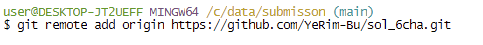

1 로컬 -> 원격
파일 -> 뉴 프로젝트 -> 콰토북 만들기
Tool -> project option -> git/svn들어가서 파일 git으로 바꾸고 재구동
- 알림창은 그냥 ok 선택해서 넘기면 된다.
터미널로 들어가서 git remote add origin (다운받을 git 페이지 주소) 치기
다운 받으면 아래처럼 아무것도 없이 깔끔하게 결과가 나온다.

오류날 수 있음

제일 막줄 : 위에 적힌 파일들이 중복 파일이니 지워줘라.
_quarto.yml부터 references.bib까지 모두 지워야 함.
-> 삭제하고 다시 git remote add origin 입력.
이런 오류는 쿼토북 자체의 중복되는 페이지 때문에 일어나므로 다운 받을 땐 꼭 콰토북일 필요는 없다. 그냥 쿼토 문서 하나 만들고 터미널 창 들어가서 git모드 바꾸고 다운 받아도 문제 없음
그 다음으로 해야 할 것.
git config --global user.email "user\@example.com" git config --global user.name "user name" git pull origin main
2 2. 저장할 때(원격 -> 로컬)
- git add .
- git commit -m “변경사항메모”
- git push origin main
2.1 추가 팁
렌더링 돌려서 안 되면book파일에서 html파일 찾고 View in web browser 클릭
넷플리파이 로그인할 때 git이랑 권한 오류가 날 때 - git이랑 연동하지 말고 그냥 이메일로 로그인할 것
수정된 파일이 깃허브엔 반영이 되지만 넷플리파이엔 연동 되지 않을 때 -> 파일 전체 렌더링 돌리고 다시 push할 것.
터미널에 붙여넣기가 안 될 때 -> ctrl + shift + v로 붙여넣기 가능